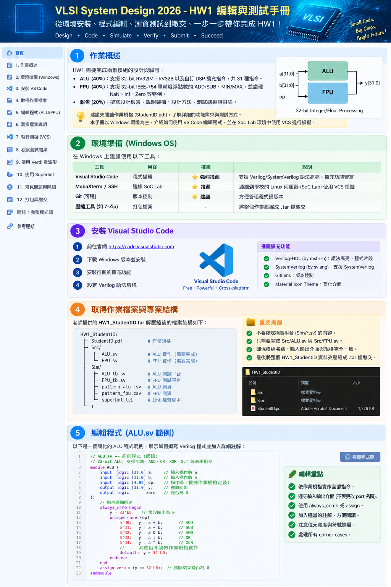

總覽圖詳細說明
上方圖片先把整份 HW1 的工作流程壓縮成一張「先看全貌、再進入細節」的導航圖。左側是章節導覽，中間依序呈現作業概述、Windows 環境、VS Code、作業檔案結構與 ALU 編輯示意。實際工作時，不應把 Windows 編輯器與 EDA simulator 混為一談：VS Code 的角色主要是讓你舒服地寫、搜尋、縮排與閱讀 Verilog/SystemVerilog；真正的課程驗證則是在 Linux/SoC Lab 上使用 VCS，波形可再用 Verdi 查看。也就是說，推薦流程不是「在 VS Code 按 Run 就算完成」，而是「Windows 寫 RTL → 傳到 Linux → VCS 編譯/模擬 → 依 FAIL 或波形回頭修 RTL」。
圖中 ALU/FPU 方塊表示 HW1 的兩個主要 DUT。ALU 是 32-bit integer/DSP combinational operation；FPU 是 IEEE-754 single precision，除了運算本身，還有 enable/valid 的時序協定。因此兩題的測試方式不同：ALU testbench 每筆資料送入後固定等待，再直接比較結果；FPU testbench 則送一個 start/enable pulse，之後等待 ready/valid 才取結果。這個差異是後面除錯時最重要的觀念之一。
1. Windows OS 到底用什麼編輯系統？
首選：Visual Studio Code
推薦程度最高。它不是 VCS 的替代品，而是 RTL source editor。適合大型 ALU/FPU 的括號配對、語法上色、全專案搜尋、同時開啟 DUT/testbench、快速跳到 module/function。建議安裝 Verilog/SystemVerilog 語法 extension；但 extension 的紅線或綠勾只供輔助，最後仍以課程 VCS 為準。
MobaXterm
Windows 端連 SoC Lab 很實用，因為同一套工具同時有 SSH terminal 與檔案傳輸介面。你可以在 VS Code 改完 ALU.sv/FPU.v，再透過 MobaXterm 把檔案同步到 Linux 工作目錄，然後直接在 terminal 執行 VCS。
Notepad++ / Vim
都能編輯，但不建議作為第一次做這份 HW1 的主要環境。Notepad++ 適合快速改小檔；Vim 適合熟悉 Linux 的使用者。對含多個 function、case、testbench 與 pattern 的作業，VS Code 的整體可讀性更好。
推薦的 Windows 工作鏈
2. Windows + VS Code 安裝與設定
- 安裝 VS Code。
- Extensions 搜尋 Verilog / SystemVerilog 語法支援。目的主要是 syntax highlight、format 與閱讀輔助。
- 建立例如
D:\VSD2026\HW1\，把 ZIP 解壓縮到這裡。 - VS Code 使用 File → Open Folder 開整個
StudentID_HW1，不要只開單一檔案。 - 左側 Explorer 同時保留
Src與Sim；編輯 DUT 時可對照 testbench 的 port name、width 與 handshake。
ALU.sv ↔ ALU_tb.sv ↔ pattern_alu.csv，以及 FPU.v ↔ FPU_tb.sv ↔ pattern_fpu.csv 之間切換。只開單檔會讓跨檔搜尋與路徑理解變得困難。3. 你這份 ZIP 的實際專案結構
StudentID_HW1/
├── README_中文说明.txt
├── Src/
│ ├── ALU.sv
│ └── FPU.v
└── Sim/
├── ALU_tb.sv
├── FPU_tb.sv
└── pattern/
├── pattern_alu.csv
└── pattern_fpu.csv
Src 是你要理解與修改的 DUT；Sim 是驗證環境。尤其不要為了讓錯誤 RTL 顯示 PASS 而修改 expected pattern。真正 hidden test 不會跟著你的本地 CSV 改變。
4. ALU.sv：完整程式，可直接 Copy
以下不是另外虛構的示範，而是直接放入你這次上傳的 VSD_HW1_complete_answer(1).zip 內 Src/ALU.sv。程式本身已有中文註解。閱讀時建議依「decode → RV32IM → RV32B → DSP」四層拆開，而不要從第一行一路硬背到最後一行。
module ALU (
input logic [31:0] instruction_i,
input logic [31:0] src_A_i,
input logic [31:0] src_B_i,
output logic [31:0] result_o
);
// ================================================================
// HW1 Prob.A : 32-bit ALU
// 支援：RV32IM 14 個 + RV32B 12 個 + DSP custom 5 個 = 31 個指令
// ================================================================
logic [6:0] opcode, funct7;
logic [2:0] funct3;
logic [4:0] shamt;
logic signed [63:0] mul_ss;
logic signed [64:0] mul_su;
logic [63:0] mul_uu;
integer i;
integer cnt;
integer tmp;
integer dot_sum;
integer lane_a, lane_b, lane_r;
always_comb begin
opcode = instruction_i[6:0];
funct3 = instruction_i[14:12];
funct7 = instruction_i[31:25];
shamt = src_B_i[4:0];
// 乘法先擴展位元，避免 signed/unsigned 混用造成高 32-bit 錯誤。
mul_ss = $signed(src_A_i) * $signed(src_B_i);
mul_su = $signed({src_A_i[31],src_A_i}) * $signed({1'b0,src_B_i});
mul_uu = $unsigned(src_A_i) * $unsigned(src_B_i);
result_o = 32'b0;
if (opcode == 7'b0110011) begin
// ---------------- RV32IM / RV32B R-type ----------------
case (funct7)
7'b0000000: begin
case (funct3)
3'b000: result_o = src_A_i + src_B_i; // ADD
3'b001: result_o = src_A_i << shamt; // SLL
3'b010: result_o = ($signed(src_A_i) < $signed(src_B_i)); // SLT
3'b011: result_o = ($unsigned(src_A_i) < $unsigned(src_B_i)); // SLTU
3'b100: result_o = src_A_i ^ src_B_i; // XOR
3'b101: result_o = src_A_i >> shamt; // SRL
3'b110: result_o = src_A_i | src_B_i; // OR
3'b111: result_o = src_A_i & src_B_i; // AND
default: result_o = 32'b0;
endcase
end
7'b0100000: begin
case (funct3)
3'b000: result_o = src_A_i - src_B_i; // SUB
3'b101: result_o = $signed(src_A_i) >>> shamt; // SRA
default: result_o = 32'b0;
endcase
end
7'b0000001: begin
case (funct3)
3'b000: result_o = mul_uu[31:0]; // MUL：低 32-bit signed/unsigned 相同
3'b001: result_o = mul_ss[63:32]; // MULH：signed × signed
3'b010: result_o = mul_su[63:32]; // MULHSU：signed × unsigned
3'b011: result_o = mul_uu[63:32]; // MULHU：unsigned × unsigned
default: result_o = 32'b0;
endcase
end
7'b0110000: begin
// ROL / ROR。shamt=0 要特別處理，避免位移 32。
case (funct3)
3'b001: result_o = (shamt==0) ? src_A_i : ((src_A_i << shamt) | (src_A_i >> (32-shamt)));
3'b101: result_o = (shamt==0) ? src_A_i : ((src_A_i >> shamt) | (src_A_i << (32-shamt)));
default: result_o = 32'b0;
endcase
end
7'b0000101: begin
case (funct3)
3'b100: result_o = ($signed(src_A_i) < $signed(src_B_i)) ? src_A_i : src_B_i; // MIN
3'b110: result_o = ($signed(src_A_i) > $signed(src_B_i)) ? src_A_i : src_B_i; // MAX
3'b101: result_o = ($unsigned(src_A_i) < $unsigned(src_B_i)) ? src_A_i : src_B_i; // MINU
3'b111: result_o = ($unsigned(src_A_i) > $unsigned(src_B_i)) ? src_A_i : src_B_i; // MAXU
default: result_o = 32'b0;
endcase
end
7'b0010100: begin
if (funct3==3'b001) result_o = src_A_i | (32'b1 << shamt); // BSET
end
7'b0100100: begin
case (funct3)
3'b001: result_o = src_A_i & ~(32'b1 << shamt); // BCLR
3'b101: result_o = (src_A_i >> shamt) & 32'b1; // BEXT
default: result_o = 32'b0;
endcase
end
default: result_o = 32'b0;
endcase
end
else if (opcode == 7'b0010011 && funct7 == 7'b0110000) begin
// ---------------- RV32B unary：CLZ / CTZ / CPOP ----------------
case (instruction_i[24:20])
5'b00000: begin // CLZ
cnt = 0;
for (i=31; i>=0; i=i-1) begin
if (src_A_i[i] == 1'b0 && cnt == (31-i)) cnt = cnt + 1;
end
result_o = cnt;
end
5'b00001: begin // CTZ
cnt = 0;
for (i=0; i<32; i=i+1) begin
if (src_A_i[i] == 1'b0 && cnt == i) cnt = cnt + 1;
end
result_o = cnt;
end
5'b00010: begin // CPOP
cnt = 0;
for (i=0; i<32; i=i+1) cnt = cnt + src_A_i[i];
result_o = cnt;
end
default: result_o = 32'b0;
endcase
end
else if (opcode == 7'b0001011 && funct7 == 7'b0000000) begin
// ---------------- DSP Custom Extension ----------------
case (funct3)
3'b000: begin // DOTP4：四組 signed 8-bit 乘積再相加
dot_sum = 0;
for (i=0; i<4; i=i+1) begin
lane_a = $signed(src_A_i[i*8 +: 8]);
lane_b = $signed(src_B_i[i*8 +: 8]);
dot_sum = dot_sum + lane_a * lane_b;
end
result_o = dot_sum[31:0];
end
3'b001: begin // SADD8：每一 lane 獨立 signed saturation
result_o = 0;
for (i=0; i<4; i=i+1) begin
lane_a = $signed(src_A_i[i*8 +: 8]);
lane_b = $signed(src_B_i[i*8 +: 8]);
tmp = lane_a + lane_b;
if (tmp > 127) lane_r = 127;
else if (tmp < -128) lane_r = -128;
else lane_r = tmp;
result_o[i*8 +: 8] = lane_r[7:0];
end
end
3'b010: begin // SSUB8
result_o = 0;
for (i=0; i<4; i=i+1) begin
lane_a = $signed(src_A_i[i*8 +: 8]);
lane_b = $signed(src_B_i[i*8 +: 8]);
tmp = lane_a - lane_b;
if (tmp > 127) lane_r = 127;
else if (tmp < -128) lane_r = -128;
else lane_r = tmp;
result_o[i*8 +: 8] = lane_r[7:0];
end
end
3'b011: begin // ABS：最小負數依題目規格飽和到 0x7fffffff
if (src_A_i == 32'h80000000) result_o = 32'h7fffffff;
else if ($signed(src_A_i) < 0) result_o = -$signed(src_A_i);
else result_o = src_A_i;
end
3'b100: begin // CLIP8：限制到 [-128,127]，再 sign-extend 成 32-bit
if ($signed(src_A_i) > 127) result_o = 32'h0000007f;
else if ($signed(src_A_i) < -128) result_o = 32'hffffff80;
else result_o = {{24{src_A_i[7]}},src_A_i[7:0]};
end
default: result_o = 32'b0;
endcase
end
end
endmodule
ALU 程式如何讀
最前面先把 32-bit instruction 切成 opcode、funct3、funct7；shift amount 則取 src_B_i[4:0]。接著先計算 signed×signed、signed×unsigned、unsigned×unsigned 三種 64-bit multiplication 中間值，原因是 MULH/MULHSU/MULHU 真正不同的是高 32 bits 的 signedness。主 always_comb 先將 result_o=0，再依 opcode/funct 解碼，這個 default assignment 也能降低 combinational latch 的風險。
DSP 區塊使用 8-bit lane。DOTP4 把 A/B 各拆成四組 signed byte，相乘後累加；SADD8/SSUB8 每個 lane 都做 [-128,127] saturation；ABS 特別處理 0x80000000；CLIP8 把輸入限制到 signed 8-bit 範圍後再 sign-extend。這些 corner cases 很適合 hidden test，所以不能只驗證一般正數。
5. FPU.v：完整程式，可直接 Copy
以下同樣直接來自你上傳 ZIP 的 Src/FPU.v，保留其中的中文註解。這份 FPU 把 IEEE-754 處理拆成分類 function、sticky-jam shift、MIN/MAX、ADD/SUB、operation selector 與 valid handshake，比把所有內容塞在一個 always block 更容易追。
module FPU(
input clk,
input rst,
input enable,
input [1:0] instruction, // 0:min, 1:max, 2:add, 3:sub
input [31:0] ai,
input [31:0] bi,
output reg [31:0] co,
output reg valid
);
// ================================================================
// HW1 Prob.B : IEEE-754 single-precision FPU
// 課件指定：MIN / MAX / ADD / SUB，並處理 NaN、Inf、Zero、GRS round-to-even。
// 介面採一拍接受、一拍輸出：enable=1 時鎖存運算結果；下一個 clock valid=1。
// ================================================================
reg [31:0] pending_result;
reg pending_valid;
// ---------- 基本分類函式 ----------
function is_nan;
input [31:0] x;
begin is_nan = (&x[30:23]) && (|x[22:0]); end
endfunction
function is_inf;
input [31:0] x;
begin is_inf = (&x[30:23]) && (~|x[22:0]); end
endfunction
function is_zero;
input [31:0] x;
begin is_zero = (~|x[30:0]); end
endfunction
// 將 27-bit {24-bit significand, G,R,S} 右移並做 sticky-jam。
function [26:0] shr_jam27;
input [26:0] x;
input integer sh;
integer k;
reg sticky;
reg [26:0] y;
begin
if (sh <= 0) begin
shr_jam27 = x;
end else if (sh >= 27) begin
shr_jam27 = {26'b0, |x};
end else begin
y = x >> sh;
sticky = 1'b0;
for (k=0; k<27; k=k+1)
if (k < sh) sticky = sticky | x[k];
y[0] = y[0] | sticky;
shr_jam27 = y;
end
end
endfunction
// ---------- 浮點 MIN ----------
function [31:0] fp_min;
input [31:0] a, b;
begin
if (is_nan(a) && is_nan(b)) fp_min = 32'hFFC00000;
else if (is_nan(a)) fp_min = b;
else if (is_nan(b)) fp_min = a;
else if (is_zero(a) && is_zero(b)) fp_min = (a[31] || b[31]) ? 32'h80000000 : 32'h00000000;
else if (a[31] != b[31]) fp_min = a[31] ? a : b;
else if (!a[31]) fp_min = (a[30:0] < b[30:0]) ? a : b;
else fp_min = (a[30:0] > b[30:0]) ? a : b;
end
endfunction
// ---------- 浮點 MAX ----------
function [31:0] fp_max;
input [31:0] a, b;
begin
if (is_nan(a) && is_nan(b)) fp_max = 32'hFFC00000;
else if (is_nan(a)) fp_max = b;
else if (is_nan(b)) fp_max = a;
else if (is_zero(a) && is_zero(b)) fp_max = (a[31] && b[31]) ? 32'h80000000 : 32'h00000000;
else if (a[31] != b[31]) fp_max = a[31] ? b : a;
else if (!a[31]) fp_max = (a[30:0] > b[30:0]) ? a : b;
else fp_max = (a[30:0] < b[30:0]) ? a : b;
end
endfunction
// ---------- 浮點 ADD/SUB 核心 ----------
function [31:0] fp_addsub;
input [31:0] a, b;
input sub; // 0:add, 1:sub
reg sa, sb, sb_eff, sr;
reg [7:0] ea, eb;
reg [22:0] fa, fb;
reg [23:0] siga24, sigb24;
reg [26:0] siga, sigb, bigsig, smallsig, aligned, norm;
reg [27:0] raw;
reg [7:0] e_big, e_small;
integer de, ew, k;
reg s_big, s_small;
reg [23:0] keep24;
reg [24:0] rounded25;
reg guard_b, round_b, sticky_b, inc;
reg [7:0] efield;
begin
sa = a[31]; sb = b[31]; sb_eff = b[31] ^ sub;
ea = a[30:23]; eb = b[30:23]; fa = a[22:0]; fb = b[22:0];
// 課件 special case：任何 NaN -> 固定 canonical NaN 0xFFC00000。
if (is_nan(a) || is_nan(b)) begin
fp_addsub = 32'hFFC00000;
end
// Infinity：先把 SUB 視為 a + (-b)，再判斷正負無限大的衝突。
else if (is_inf(a) && is_inf(b) && (sa != sb_eff)) begin
fp_addsub = 32'hFFC00000;
end
else if (is_inf(a)) begin
fp_addsub = {sa,8'hff,23'b0};
end
else if (is_inf(b)) begin
fp_addsub = {sb_eff,8'hff,23'b0};
end
// 兩個零：同號保留該號；異號在 round-to-even 下回 +0。
else if (is_zero(a) && is_zero(b)) begin
fp_addsub = {(sa==sb_eff) ? sa : 1'b0,31'b0};
end
else if (is_zero(a)) begin
fp_addsub = {sb_eff,b[30:0]};
end
else if (is_zero(b)) begin
fp_addsub = a;
end
else begin
// exponent=0 的 subnormal 使用 effective exponent=1，hidden bit=0。
siga24 = (ea==0) ? {1'b0,fa} : {1'b1,fa};
sigb24 = (eb==0) ? {1'b0,fb} : {1'b1,fb};
siga = {siga24,3'b000};
sigb = {sigb24,3'b000};
// 先依 exponent，再依 significand 決定 magnitude 較大者。
if (((ea==0)?8'd1:ea) > ((eb==0)?8'd1:eb) ||
((((ea==0)?8'd1:ea) == ((eb==0)?8'd1:eb)) && siga24 >= sigb24)) begin
bigsig=siga; smallsig=sigb; e_big=(ea==0)?8'd1:ea; e_small=(eb==0)?8'd1:eb;
s_big=sa; s_small=sb_eff;
end else begin
bigsig=sigb; smallsig=siga; e_big=(eb==0)?8'd1:eb; e_small=(ea==0)?8'd1:ea;
s_big=sb_eff; s_small=sa;
end
de = e_big - e_small;
aligned = shr_jam27(smallsig,de);
ew = e_big;
sr = s_big;
if (s_big == s_small) begin
// 同號：significand 相加。
raw = {1'b0,bigsig} + {1'b0,aligned};
if (raw[27]) begin
// carry 造成右移一位；被丟掉的 bit 要併入 sticky。
norm[26:1] = raw[27:2];
norm[0] = raw[1] | raw[0];
ew = ew + 1;
end else begin
norm = raw[26:0];
end
end else begin
// 異號：因 bigsig >= aligned，所以直接做 magnitude subtraction。
raw = {1'b0,bigsig} - {1'b0,aligned};
norm = raw[26:0];
if (norm == 0) begin
fp_addsub = 32'h00000000;
end else begin
// cancellation 後向左 normalize；ew=1 時不能再減 exponent。
for (k=0; k<26; k=k+1) begin
if ((norm[26]==0) && (ew>1)) begin
norm = norm << 1;
ew = ew - 1;
end
end
end
end
if (norm != 0) begin
// exponent overflow -> Infinity。
if (ew >= 255) begin
fp_addsub = {sr,8'hff,23'b0};
end else begin
// GRS round-to-nearest, ties-to-even。
keep24 = norm[26:3];
guard_b = norm[2];
round_b = norm[1];
sticky_b= norm[0];
inc = guard_b && (round_b || sticky_b || keep24[0]);
rounded25 = {1'b0,keep24} + inc;
if (rounded25[24]) begin
// rounding 本身又產生 carry。
keep24 = rounded25[24:1];
ew = ew + 1;
end else begin
keep24 = rounded25[23:0];
end
if (ew >= 255) begin
fp_addsub = {sr,8'hff,23'b0};
end else begin
// ew=1 且 hidden bit=0 表示 subnormal，真正 exponent field 應為 0。
if ((ew==1) && (keep24[23]==0)) efield = 0;
else efield = ew[7:0];
fp_addsub = {sr,efield,keep24[22:0]};
end
end
end
end
end
endfunction
// ---------- 指令選擇 ----------
function [31:0] do_op;
input [1:0] op;
input [31:0] a,b;
begin
case(op)
2'd0: do_op = fp_min(a,b);
2'd1: do_op = fp_max(a,b);
2'd2: do_op = fp_addsub(a,b,1'b0);
2'd3: do_op = fp_addsub(a,b,1'b1);
default: do_op = 32'b0;
endcase
end
endfunction
// ---------- valid handshake ----------
// enable 在某個上升緣為 1：計算並暫存；下一個上升緣 valid=1 且 co 有效。
always @(posedge clk or posedge rst) begin
if (rst) begin
co <= 32'b0;
valid <= 1'b0;
pending_result <= 32'b0;
pending_valid <= 1'b0;
end else begin
valid <= pending_valid;
if (pending_valid) co <= pending_result;
pending_valid <= enable;
if (enable) pending_result <= do_op(instruction,ai,bi);
end
end
endmodule
FPU 架構圖
圖中前半部處理 IEEE-754 數值本身，最後一段則是介面時序。你的程式採 pending_result/pending_valid：enable 在某個 rising edge 為 1 時先算好並暫存，下一個 clock 把 pending_valid 送到 valid，若有效則把 pending_result 送到 co。這正好要與 testbench 的等待方式一起理解。
6. Testbench 完整程式：如何測你的 RTL
ALU_tb.sv — 點開/收合，並可複製
`timescale 1ns/10ps
`define PatternPATH "./pattern/pattern_alu.csv"
`include "../Src/ALU.sv"
module tb_ALU;
localparam DATA_WIDTH = 32;
localparam INST_WIDTH = 32;
reg [INST_WIDTH-1:0 ] instruction_i;
reg [DATA_WIDTH-1:0 ] src_A_i;
reg [DATA_WIDTH-1:0 ] src_B_i;
wire [DATA_WIDTH-1:0 ] result_o;
int error[31];
int score[31] = '{default:2};
int total_score = 0;
int fail_count = 0;
int fd, nread;
string line;
int inst_id;
logic [31:0] inst_hex, a_hex, b_hex, exp_hex;
ALU ALU (
.instruction_i (instruction_i),
.src_A_i (src_A_i),
.src_B_i (src_B_i),
.result_o (result_o)
);
initial begin
instruction_i = 32'd0;
src_A_i = 32'd0;
src_B_i = 32'd0;
for(int i=0; i<31; i++) error[i] = 0;
fd = $fopen(`PatternPATH, "r");
if (fd == 0) begin
$display("[ERROR] Cannot open %s", `PatternPATH);
$finish;
end
while (!$feof(fd)) begin
void'($fgets(line, fd));
if (line.len() == 0) continue;
nread = $sscanf(line, "%d,%h,%h,%h,%h", inst_id, inst_hex, a_hex, b_hex, exp_hex);
if (nread != 5) continue;
instruction_i = inst_hex;
src_A_i = a_hex;
src_B_i = b_hex;
#10;
if($isunknown(result_o))begin
$display(" ============ Unknown value occurs at result_o (Inst ID: %0d) ============", inst_id);
$finish;
end
else begin
if(result_o !== exp_hex)begin
error[inst_id] += 1;
if(error[inst_id] <= 5)
$display("[FAIL] Inst %0d | A=%h B=%h Inst=%h | GOT=%h EXP=%h", inst_id, src_A_i, src_B_i, instruction_i, result_o, exp_hex);
end
end
end
$fclose(fd);
$display("\n========================================");
for(int i=0; i<31; i++) begin
if(error[i] === 0) begin
$display("Instruction %2d ALL PASS !!!", i);
total_score += score[i];
end else begin
$display("Instruction %2d FAILED (%0d errors)", i, error[i]);
fail_count++;
end
end
$display("========================================");
if(fail_count == 0)begin
$display("\n");
$display(" **************************** ");
$display(" ** ** |\\__|| ");
$display(" ** Congratulations !! ** / O.O | ");
$display(" ** ** /_____ | ");
$display(" ** Simulation PASS!! ** /^ ^ ^ \\ |");
$display(" ** ** |^ ^ ^ ^ |w| ");
$display(" **************************** \\m___m__|_|");
end
else begin
$display("\n");
$display(" **************************** ");
$display(" ** ** |\\__|| ");
$display(" ** OOPS!! ** / X,X | ");
$display(" ** ** /_____ | ");
$display(" ** Simulation Failed!! ** /^ ^ ^ \\ |");
$display(" ** ** |^ ^ ^ ^ |w| ");
$display(" **************************** \\m___m__|_|");
end
$display("\n====== Your score : %2d ======\n", total_score);
$finish;
end
initial begin
`ifdef FSDB
$dumpfile("ALU.fsdb");
$dumpvars(0, tb_ALU);
`endif
end
endmoduleALU_tb 先用 $fopen("./pattern/pattern_alu.csv","r") 開測資，逐行 $fgets，再以 $sscanf("%d,%h,%h,%h,%h") 解析 5 欄。每筆把 instruction、A、B 填到 DUT，等待 #10 後比較 result_o !== exp_hex。如果 result 是 X，testbench 會立即停止；如果答案錯，則把該 instruction ID 的 error counter 加一，最多列出前五筆詳細錯誤。
FPU_tb.sv — 點開/收合，並可複製
`timescale 1ns/1ps
`define MAX 100000 // Max cycle number
`include "../Src/FPU.v"
module tb_fp32;
logic clk;
logic rst;
logic start;
logic [31:0] a, b;
logic [31:0] result;
logic ready;
logic [1:0] ins;
initial begin
clk = 0;
forever #5 clk = ~clk;
end
FPU dut(
.clk(clk),
.rst(rst),
.enable(start),
.instruction(ins),
.ai(a),
.bi(b),
.co(result),
.valid(ready)
);
int fd, line_no, nread;
string line;
int unsigned n_total, n_pass, n_fail;
logic [31:0] a_hex, b_hex, exp_hex;
logic [1:0] in;
function automatic bit equal_bits(logic [31:0] x, logic [31:0] y);
return x === y;
endfunction
task send_and_check;
input [31:0] ai, bi, expected;
input [1:0] ii;
reg [31:0] got;
begin
// ? A
ins <= ii;
a <= ai;
start <= 1'd1;
// ? B
b <= bi;
@(posedge clk);
start <= 1'd0;
// ? Z
@(posedge clk);
while (!ready) @(posedge clk);
got = result;
n_total = n_total + 1;
if(n_fail < 5) begin
if (equal_bits(got, expected)) begin
n_pass = n_pass + 1;
//$display("[PASS] A=%h B=%h Z=%h", ai, bi, got);
end else begin
n_fail = n_fail + 1;
$display("[FAIL] line = %d A=%h B=%h GOT=%h EXP=%h", line_no,ai, bi, got, expected);
end
end
end
endtask
initial begin
rst = 1;
start = 0;
a = '0;
b = '0;
#20;
rst = 0;
fd = $fopen("./pattern/pattern_fpu.csv","r");
if (fd == 0) begin
$finish;
end
n_total = 0; n_pass = 0; n_fail = 0; line_no = 0;
while (!$feof(fd)) begin
line_no++;
void'($fgets(line, fd));
if (line.len() == 0) continue;
nread = $sscanf(line, "%h,%h,%h,%h", a_hex, b_hex, exp_hex,in);
if (nread != 4) begin
continue;
end
send_and_check(a_hex,b_hex,exp_hex,in);
end
#(10*`MAX)
$fclose(fd);
$display("TOTAL=%0d PASS=%0d FAIL=%0d", n_total, n_pass, n_fail);
if (n_fail != 0)begin
$display(" THERE ARE FAILURES ");
$display(" _______ ");
$display(" |.--+--.| ");
$display(" || | || ");
$display(" ||--`--|| ");
$display(" || ,|| ");
$display(" || ,' || ");
$display(" ||,' || ");
$display(" || || ");
$display(" ||_____||__ ");
$display(" | ___. | `. ");
$display(" |(x x)) | ,( ");
$display(" |`.-,' |-'_ ) ");
$display(" |______ |\' -' See u again ");
$display(" _\ /_) ) ");
$display(" '\"`\___//_)' ");
$display(" ''^ ");
end
else begin
$display(" ALL TEST PASS ");
$display(" _______ ");
$display(" |.--+--.| ");
$display(" || | || ");
$display(" ||--`--|| ");
$display(" || ,|| ");
$display(" || ,' || ");
$display(" ||,' || ");
$display(" || || ");
$display(" ||_____||__ ");
$display(" | ___. | `. ");
$display(" |(o o)) | ,( ");
$display(" | `--' |-'_ ) ");
$display(" |______ |\' -' Good job ");
$display(" _\ /_) ) ");
$display(" '\"`\___//_)' ");
$display(" ''^ ");
end
$finish;
end
initial begin
`ifdef FSDB
$dumpfile("FPU.fsdb");
$dumpvars(0, tb_fp32);
`endif
end
endmodule
FPU_tb 的重點不是固定延遲，而是 handshake。send_and_check 先放 instruction/A/B，令 start=1，等一個 posedge 後把 start 拉低；接著再等 posedge，然後 while(!ready) 持續等待。ready 一旦為 1，才把 result 取到 got 並與 expected bit-by-bit 比較。因此 FPU 如果卡住，第一件事不是懷疑 CSV，而是看 valid/ready 是否有被正確拉高。
7. 測資檔案怎麼測？實際格式與數量
pattern_alu.csv
實際共有 2,326 筆。五欄依序是 instruction ID、instruction hex、A、B、expected。31 類 instruction 都存在；ID 29 有 76 筆，其餘類別各 75 筆。
pattern_fpu.csv
實際共有 2,000 筆。四欄依序是 A、B、expected、operation。operation 0/1/2/3 對應 MIN/MAX/ADD/SUB。
ALU CSV 前 8 筆
| Inst ID | Instruction | A | B | Expected |
|---|---|---|---|---|
0 | 002081b3 | e3a41ed6 | 519b5c9e | 353f7b74 |
1 | 402081b3 | e3a41ed6 | 519b5c9e | 9208c238 |
2 | 002091b3 | e3a41ed6 | 519b5c9e | 80000000 |
3 | 0020a1b3 | e3a41ed6 | 519b5c9e | 00000001 |
4 | 0020b1b3 | e3a41ed6 | 519b5c9e | 00000000 |
5 | 0020c1b3 | e3a41ed6 | 519b5c9e | b23f4248 |
6 | 0020d1b3 | e3a41ed6 | 519b5c9e | 00000003 |
7 | 4020d1b3 | e3a41ed6 | 519b5c9e | ffffffff |
FPU CSV 前 8 筆
| A | B | Expected | Op |
|---|---|---|---|
4FF65800 | CEEBDBA2 | CEEBDBA2 | 0 |
4FF65800 | CEEBDBA2 | 4FF65800 | 1 |
4FF65800 | CEEBDBA2 | 4FBB6118 | 2 |
4FF65800 | CEEBDBA2 | 5018A774 | 3 |
4FF65801 | CEEBDBA3 | CEEBDBA3 | 0 |
4FF65801 | CEEBDBA3 | 4FF65801 | 1 |
4FF65801 | CEEBDBA3 | 4FBB6118 | 2 |
4FF65801 | CEEBDBA3 | 5018A775 | 3 |
測試原則：測資檔是 golden reference，不要用 Excel 開完又存檔導致十六進位字串或格式被改掉。若只想看內容，優先用 VS Code 直接開 CSV。
8. MobaXterm → Linux → VCS：實際操作
- Windows 打開 MobaXterm，建立 SSH session，登入課程 SoC Lab。
- 把
StudentID_HW1上傳到自己的 Linux 目錄。 - terminal 用
pwd確認位置，再cd StudentID_HW1/Sim。 - 從
Sim執行 VCS，因為 testbench 的 pattern path 是./pattern/...，而 source include 是../Src/...。
# 1. 先確認目前目錄 pwd ls # 2. 進入 Sim cd ~/你的工作目錄/StudentID_HW1/Sim # 3. ALU vcs -R -full64 -sverilog ALU_tb.sv -debug_access+all +define+FSDB # 4. FPU vcs -R -full64 -sverilog FPU_tb.sv -debug_access+all +define+FSDB # 5. 若正式作業目錄有 superlint.tcl jg -superlint superlint.tcl
不要在 Windows PowerShell 直接輸入 vcs 就期待成功。VCS/Verdi/JasperGold 是課程 Linux EDA 環境中的工具；Windows 這裡主要負責編輯、SSH 與傳檔。
9. 測出來的結果怎麼看？
ALU 全部通過時，testbench 的結尾形式
Instruction 0 ALL PASS !!! Instruction 1 ALL PASS !!! ... Instruction 30 ALL PASS !!! ======================================== ** Congratulations !! ** ** Simulation PASS!! ** ====== Your score : 62 ======
這個 62 是 ALU_tb 自己的 scoring：31 個 instruction category，每個 score[i]=2，某類只要有任何 error，該類就不加 2 分。因此它是 provided testbench 的內部顯示分數，不要直接把它當成整份 HW1 最終成績。
ALU FAIL 時
[FAIL] Inst 12 | A=........ B=........ Inst=........ | GOT=........ EXP=........
除錯時只先看第一筆：Inst 告訴你是哪一類 operation；A/B 是輸入；GOT 是你的 RTL；EXP 是 golden。把同一組數值手算，再到波形追 result_o。
FPU 全部通過時
TOTAL=2000 PASS=2000 FAIL=0 ALL TEST PASS Good job
這是根據你提供的 testbench 與目前 CSV 2,000 筆資料推得的「全數正確時應有結果」。本 HTML 製作環境沒有課程授權 VCS，所以我沒有假裝已在這裡執行 VCS；真正結果請在 SoC Lab 依上一節指令執行。
if(n_fail < 5) 才進行後續 pass/fail comparison，所以出現第 5 個 failure 後，後面的 pattern 不再正常累計比較。看到 FAIL 時應先修前五筆，再重跑，而不是只依最後 TOTAL 判斷覆蓋情況。10. FSDB 與 Verdi：從 FAIL 追到 RTL
兩個 testbench 都有 `ifdef FSDB。因為 VCS command 加了 +define+FSDB，ALU 會 dump ALU.fsdb，FPU 會 dump FPU.fsdb。terminal 告訴你「哪一筆錯」，Verdi 則讓你看「為什麼錯」。
ALU 建議加入 instruction_i/src_A_i/src_B_i/result_o/opcode/funct3/funct7；FPU 建議至少看 clk/rst/enable/instruction/ai/bi/co/valid/pending_valid/pending_result。若 ADD/SUB 才錯，再加入 exponent、significand、GRS、normalize 的中間訊號。
11. Superlint 與常見錯誤
| 問題 | 典型症狀 | 處理 |
|---|---|---|
| 路徑錯誤 | Cannot open pattern | 一定從 Sim 目錄執行，先用 pwd/ls。 |
| Unknown X | ALU_tb 直接停止 | 檢查 always_comb default、case default、未賦值變數。 |
| Signedness | MULH、DSP、比較錯 | 明確使用 $signed/$unsigned，確認 intermediate width。 |
| FPU 不結束 | while(!ready) 一直等 | 看 valid FSM/pipe，確認 enable 進來後 valid 最終會出現。 |
| 只有浮點 corner case 錯 | 一般數字 pass | 逐項查 NaN、Inf、±0、subnormal、round-to-even。 |
| ModelSim pass、VCS fail | 不同 simulator 結果不同 | 以課程指定 VCS 為最後依據。 |
12. 每次修改後，照這張表操作
| 順序 | 動作 | 成功條件 |
|---|---|---|
| 1 | VS Code 修改一小段 RTL，存檔 | port 名稱/width 不亂改 |
| 2 | MobaXterm 同步到 Linux | 確認上傳的是最新時間版本 |
| 3 | cd 到 Sim，跑 VCS | compile 無 error |
| 4 | 先處理第一個 FAIL | 手算與 GOT/EXP 對得上 |
| 5 | 需要時用 FSDB/Verdi | 找到第一個偏離 golden 的內部節點 |
| 6 | 全部 provided patterns pass | ALU 31 類皆 PASS；FPU 2,000 筆 PASS |
| 7 | Superlint | 處理重要 error/warning |
| 8 | 整理 hierarchy + report + tar | 壓縮後再列出內容檢查 |
附錄：打包命令
# 回到 HW1_StudentID 的上一層 cd .. # 依老師最後要求的資料夾名稱調整後打包 tar -cvf HW1_StudentID.tar HW1_StudentID/ # 一定再檢查 tar 裡面到底有什麼 tar -tf HW1_StudentID.tar